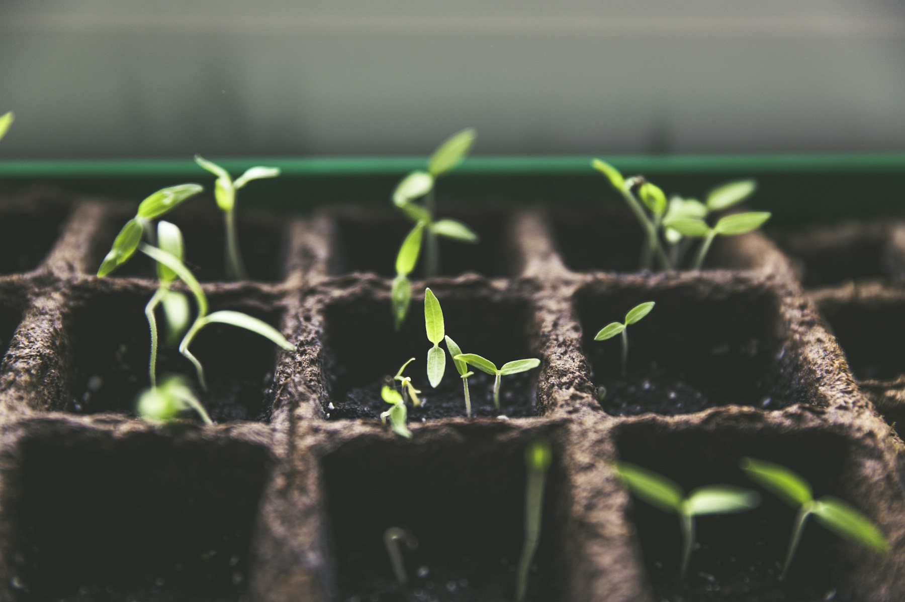

Plant with intention
Layers of texture, seasonal interest, and a planting direction suited to the space.
A little more life, outside
Spaces to gather, paths to wander, and planting that gives the seasons somewhere to unfold.
Explore the possibilities ↗Fictional landscaping studio · concept photography

Made for life outside
Layers of texture, seasonal interest, and a planting direction suited to the space.
Paths, places to pause, and natural materials that connect house and garden.
A practical maintenance conversation, so the garden can settle into its own rhythm.
From first thought to fresh growth
01 / Understand
Light, soil, movement, and the way you want to spend your time outdoors.
02 / Shape
Bring planting and structure together in a considered proposal.
03 / Nurture
Plan for the seasons and the practical care the space will need.
Your patch of possibility
Tell us about the space, how it feels today, and what you’d like it to become.